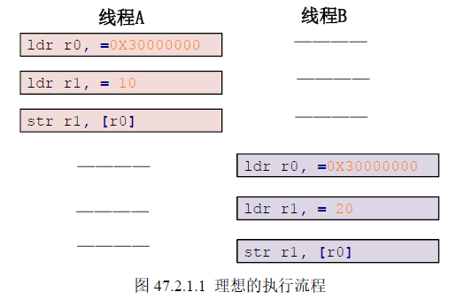
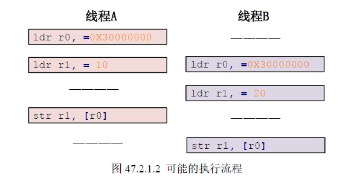
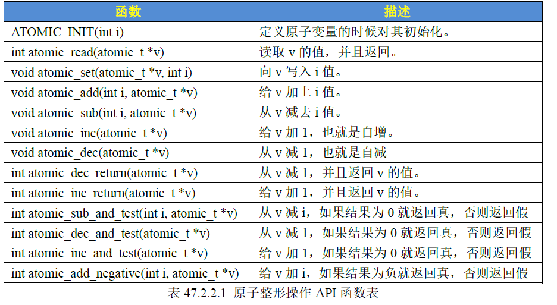
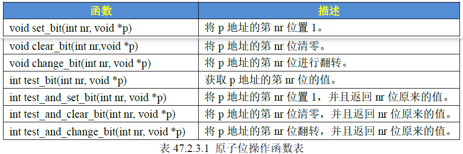
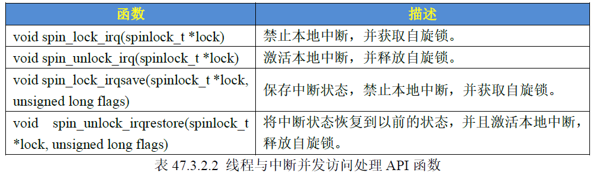
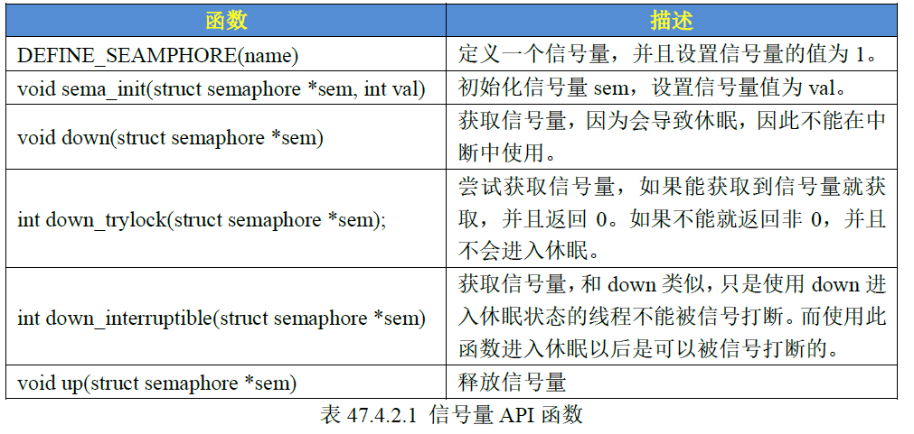
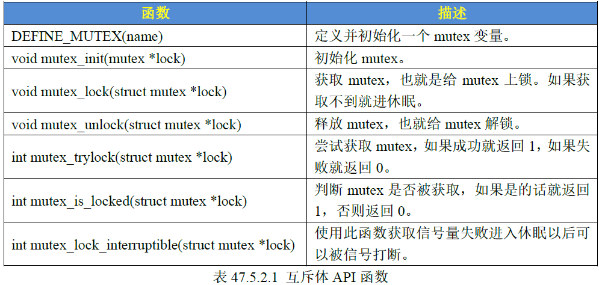

Linux内核锁机制
Linux内核锁机制
Linux 并发与竞争
并发：Linux 系统是个多任务操作系统，会存在多个任务同时访问同一片内存空间，这些任务可能会相互覆盖这段内存中数据，造成内存数据混乱。
并发访问带来的问题就是竞争，竞争并发的执行单元对共享资源（硬件资源和软件上的全局变量）的访问而导致的竞争状态。因此我们需要对共享数据进行保护处理，防止多个任务同时访问它。
并发的原因一般有：
- 多线程并发访问：Linux 是多任务（线程）的系统，多线程访问是最基本的原因。
- 抢占式并发访问：Linux 内核支持抢占，调度程序可以在任意时刻抢占正在运行的线程，从而运行其他的线程。
- 中断程序并发访问：硬件中断的优先级很高。
- SMP（多核）核间并发访问：多个 CPU 核存在核间并发访问。
临界资源：多个进程访问的资源，共享数据段。
临界区：多个进程访问的代码段。
Linux 内核锁机制
Linux 内核提供解决竞争的手段有如下几个方法：原子操作、自旋锁、信号量、互斥体。
原子操作
原子操作是指不能再进一步分割的操作，一般原子操作用于整型变量或者位操作
例如 C 语言中的整型变量 a 进行赋值操作，C 语言编译转换为汇编指令，但 ARM 架构不支持直接对寄存器进行读写操作，需要借助寄存器来完成赋值操作。
1 | // c语言 |
假设现在线程 A 要向 a 变量写入 10 这个值，而线程 B 也要向 a 变量写入 20 这个值，理想执行顺序如下：

但实际情况可能如下：

为了防止出现该问题，我们需要保证这三行汇编指令作为一个整体运行。
Linux 内核定义了叫做 atomic_t 结构体来完成整型数据的原子操作，在使用中用原子变量代替整型变量。
1 | // include/linux/types.h |
原子操作的 API 函数：

原子位操作的 API 函数：原子位操作是直接对内存进行操作

eg：使用原子变量 lock，用来实现一次只能一个应用程序访问 LED。
- 驱动入口函数将 lock 值设置为 1
- 打开驱动设备时用
atomic_dec_and_test函数将 lock 减 1，atomic_dec_and_test函数返回值为真就表示 lock 当前值为 0，表示设备可用 - q若返回值为假，表示 lock 减 1 之后为负数，即有其他设备将正在使用 LED 使得 lock 为 0；需要将 lock 加 1，使得 lock 为 0 表示设备正在使用，并返回 -EBUSY
1 | atomic_t lock; /* 原子变量 */ |
自旋锁
原子操作只能对整型变量或者位进行保护，自旋锁可以对更多的资源进行保护。
如果自旋锁正在被线程 A 持有，而线程 B 想要获取自旋锁，那么线程 B 就会处于忙循环—旋转—等待状态，线程 B 不会进入休眠状态或者说去做其他的处理，直到线程 A 释放自旋锁，线程 B 才可以访问共享资源。
- 自旋锁适用于短时期的轻量级加锁，否则会降低系统性能。
- 被自旋锁保护的临界区一定不能调用睡眠和阻塞的函数，否则可能会导致死锁现象。
- 获取锁之前要禁止本地中断，防止死锁现象。如一个线程获取锁之后被中断打断，而这个中断要想申请该锁，则会发送死锁现象。
Linux 内核定义了 spinlock_t 结构体表示自旋锁：
1 | typedef struct spinlock { |

eg：使用自旋锁，用来实现一次只能一个应用程序访问 LED。
- dev_stats 表示设备使用状态，0：设备未使用； >0：设备已经被使用
- 驱动入口函数初始化自旋锁
- 打开驱动设备时调用
spin_lock_irqsave函数获取自旋锁，保存本地中断状态 - 判断 dev_stats 是否大于 0，若设备已被使用，则调用
spin_unlock_irqrestore函数解锁并返回 -EBUSY - 若设备未被使用，dev_stats 加 1，表示设备开始使用了，接着调用
spin_unlock_irqrestore函数解锁 - 退出驱动设备将 dev_stats 减 1，表示设备释放
- 这里的自旋锁的工作就是保护 dev_stats 变量不被其他程序访问修改，这里的 dev_stats 是该文件的全局变量，但实际上这个变量可能会被各种文件使用，因此需要用自旋锁可以用来保护其不被访问。
1 | int dev_stats; /* 设备使用状态，0，设备未使用;>0,设备已经被使用 */ |
信号量
Linux 内核提供了信号量机制，信号量常常用于控制对共享资源的访问。它是一个计数器，常用于实现进程间的互斥与同步，而不是用于存储进程间通信数据。相比于自旋锁，信号量可以使线程进入休眠状态
- 因为信号量可以使等待资源线程进入休眠状态，因此适用于那些占用资源比较久的场合。
- 因此信号量不能用于中断中，因为信号量会引起休眠，中断不能休眠。
- 如果共享资源的持有时间比较短，那就不适合使用信号量了，因为频繁的休眠、切换线程引起的开销要远大于信号量带来的那点优势。
比如 A 与 B、C 合租了一套房子，这个房子只有一个厕所，一次只能一个人使用。某一天早上 A 去上厕所了，过了一会 B 也想用厕所，因为 A 在厕所里面，所以 B 只能等到 A 用来了才能进去。B 要么就一直在厕所门口等着，等 A 出来，这个时候就相当于自旋锁。B 也可以告诉 A，让 A 出来以后通知他一下，然后 B 继续回房间睡觉，这个时候相当于信号量。可以看出，使用信号量会提高处理器的使用效率，毕竟不用一直傻乎乎的在那里“自旋”等待。但是，信号量的开销要比自旋锁大，因为信号量使线程进入休眠状态以后会切换线程，切换线程就会有开销。
Linux 内核使用 semaphore 结构体表示信号量：
1 | struct semaphore { |

eg：
- 信号量 sem 为1 的时候表示 LED 灯还没有被使用，如果应用程序 A 要使用 LED 灯，先调用 open 函数打开设备节点，这个时候会获取信号量 sem，获取成功以后 sem 的值减 1 变为 0。
- 如果此时应用程序 B 也要使用 LED 灯，调用 open 函数打开设备节点就会因为信号量无效(值为 0)而进入休眠状态。
- 当应用程序 A 运行完毕，调用 close 函数的时候就会释放信号量 sem，此时信号量 sem 的值就会加 1，变为 1。
- 信号量 sem 再次有效，表示其他应用程序可以使用 LED 灯了，此时在休眠状态的应用程序 B 就会获取到信号量 sem，获取成功以后就开始使用 LED 灯。
1 | struct semaphore sem; /* 信号量 */ |
互斥体
将信号量的值设置为 1 也可以使用信号量进行互斥，但是 Linux 内核提供了一个更专业的机制来进行互斥——互斥体（mutex）。互斥访问表示一次只有一个线程可以访问共享资源，不能递归申请互斥体。
1 | struct mutex { |
- mutex 可以导致休眠，不能中断中使用 mutex，中断中只能使用自旋锁。
- 同信号量一样，mutex 保护的临界区可以调用引起阻塞的 API 函数。
- 一次只有一个线程可以持有 mutex，因此 mutex 的持有者必须自己释放 mutex，并且 mutex 不能递归上锁和解锁。

eg：过程跟使用二值信号量一样，信号量为二值信号量时就是互斥体，只不过互斥体是专门用来互斥的。
1 | struct mutex lock; /* 互斥体 */ |